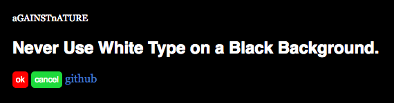
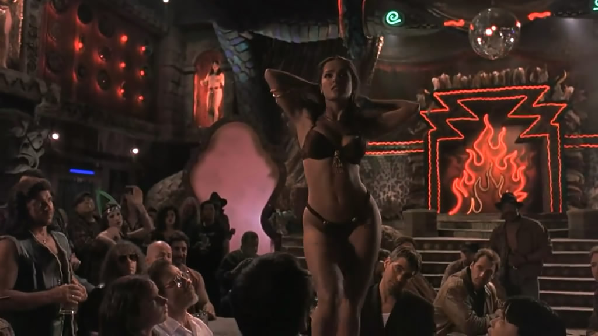
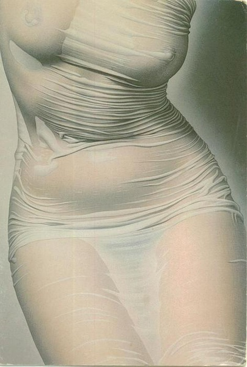
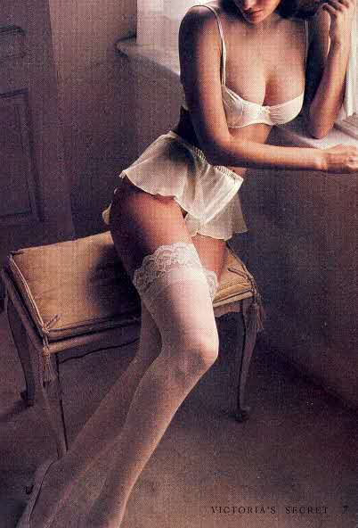

aGAINSTnATURE
AGAINST NATURE 不自然 UI
2016/6/23 by DKZ

不自然。
Never Use White Type on a Black Background. 为什么这么讲，大概有几条原因。一是长时间盯着黑底白字眼睛会累辨识度也不高，二是印刷的时候墨容易晕这样白字就看不清了而且黑底比较费墨，三我就编不出来了但总之纸是白的字是黑的这样比较自然。
于是，这句话变成了公理自然而然被沿用到了各种设计中，我打保票你看到这篇文章的地方十有八九是白底黑字，无论你是使用什么媒介。我习惯使用黑底的molokai编程，长时间使用眼睛还是挺累的，但并不是的白底的配色方案就不会累了，辨识度用视网膜屏的话也没有问题。纸媒的话如今的打印机dpi都会大于显示器的ppi，而且白墨水比黑墨水更贵哦。
还有类似乳沟和大腿不要同时出现。



凭什么？没道理嘛(图片来自网络)。
当然我并不是想要推翻什么或是证明什么，我也不是单纯为了发小黄图，我也搞不清我为什么要这么做。我做了一套没有用的UI，里面是各种不自然的设计。比如说黑底白字，确认按钮是红色的取消是绿色的，标题会比正文字小等等。这个项目名为aGAINSTnATURE，你可以在github上找到它。也欢迎你把各种不自然的东西放进去，并不限于UI设计，可以是编程中不自然的实现方式，也可以是任何AGAINST NATURE的东西。可以issues或pull requests当然直接告诉我也行。这里没什么规矩，如果有的话就是打破规矩。
也许你不太理解这个项目的意义是什么，我也不是很理解。这个东西不会在任何一个真实场景中使用，基本上对于这个项目的所有贡献都是无用的。但我觉得不必太纠结于意义这件事，生活本来就是没有意义的，如果生活有意义所有人都会被这个意义所奴役，追逐到死，我觉得这样就挺不自然的。
如果非要说有什么意义的话。我为你指明了错误的道路，你背对着我走也许是对的。